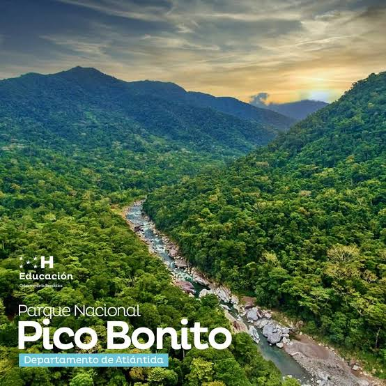

1.Parque Nacional Pico Bonito

El Parque Nacional Pico Bonito es uno de los espacios naturales protegidos más importantes de Honduras. Su biodiversidad única y sus paisajes impresionantes lo convierten en un destino ideal para el ecoturismo.